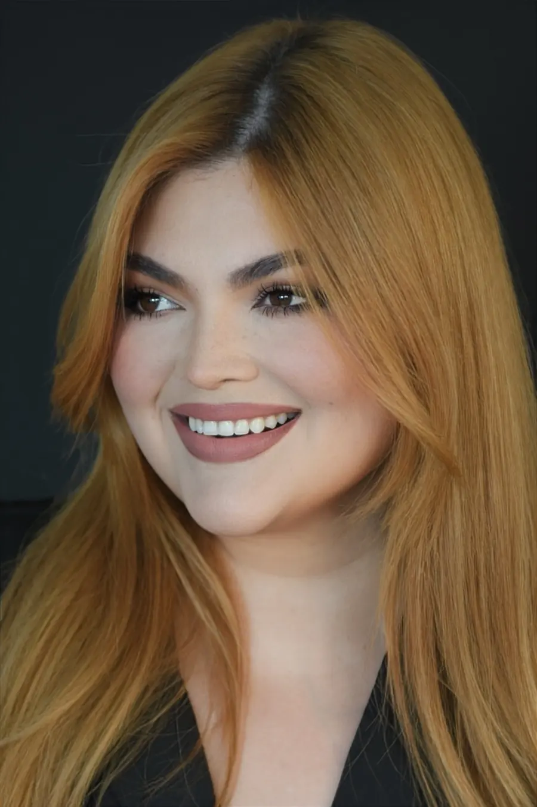

De Venezuela a Texas, con la brocha en la mano.
Maquilladora y estilista profesional, venezolana, mamá de dos, radicada en San Antonio. Creo que toda mujer merece sentirse la mejor versión de sí misma en su día más importante, y que la entiendan en su idioma mientras pasa.
El maquillaje nunca fue solo maquillaje.
Crecí en Venezuela, donde la belleza es un idioma que todo el mundo habla. Aprendí maquillando a mis tías, a mis amigas y, después, a novias que me confiaron el día más fotografiado de su vida.
Hoy vivo en San Antonio con mi esposo y nuestros dos hijos. Aquí encontré una ciudad que celebra en español — quinces, bodas, bautizos — y un mercado donde casi nadie ofrecía maquillaje y peinado de lujo, precios publicados y atención en español en el mismo lugar. Así que lo construí.
Claudia Serrano Makeup Studio & Academy es eso: un estudio donde te tratan como familia, y una academia para que lo que yo aprendí a golpes, tú lo aprendas fácil.
El lujo no es más producto. Es más intención.
La mitad de un gran maquillaje pasa antes de la base. Preparo, hidrato y busco tu subtono, sobre todo en piel latina y morena, donde más errores se cometen.
No hago un solo look para todas. Soft glam para una novia, full glam para una quince, Hollywood waves para una gala: siempre reconociblemente tú.
Precios publicados, contrato por escrito, respuesta en menos de una hora. La confianza empieza antes de la primera pincelada.
Dos iniciales, una firma.
El monograma CS es mi firma a mano convertida en oro: la C abraza a la S como sostengo un rostro mientras trabajo, con cuidado y con seguridad. Lo verás en mi kit, en mis certificados y, algún día, en mis propios productos.
Siempre aprendiendo, siempre mejorando el kit.
- Formación continua en soft glam nupcial, airbrush y técnicas HD (detalles a confirmar con Claudia).
- Productos profesionales de larga duración y a prueba de flash; membresías pro en trámite (MAC Pro y otras).
- Higiene estricta: brochas sanitizadas, aplicadores desechables, formulario de alergias antes de cada primera cita.
- Profesional con seguro de responsabilidad (en trámite).
